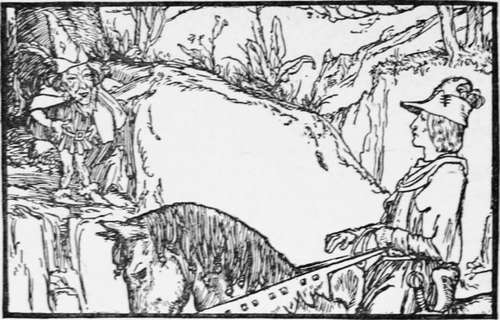

The Water Of Life
Description
This section is from the book "Household Tales by Brothers Grimm", by Brothers Grimm. Also available from Amazon: Household Tales by Brothers Grimm.
The Water Of Life
Long before you or I were born, there reigned, in a country a great way off, a king who had three sons. This king once fell very ill,—so ill that nobody thought he could live. His sons were very much grieved at their father s sickness ; and as they were walking together very mournfully in the garden of the palace, a little old man met them and asked what was the matter. They told him that their father was very ill, and that they were afraid nothing could save him. "I know- what would," said the little old man; "it is the Water of Life. If he could have a draught of it he would be well again; but it is very hard to get." Then the eldest son said, " I will soon find it": and he went to the sick king, and begged that he might go in search of the Water of Life, as it was the only thing that could save him. "No," said the king, " I had rather die than place you in such great danger as you must meet with in your journey." But he begged so hard that the king let him go; and the prince thought to himself, "if I bring my father this water, he will make me sole heir to his kingdom."
Then he set out: and when he had gone on his way some time he came to a deep valley, overhung with rocks and woods; and as he looked around, he saw standing above him on one of the rocks a little ugly dwarf, with a sugarloaf cap and a scarlet cloak; and the dwarf called to him and said, "Prince, whither so fast?" "What is that to thee, you ugly imp ?" said the prince haughtily, and rode on.
But the dwrarf was enraged at his behaviour, and laid a fairy spell of ill-luck upon him; so that as he rode on the mountain pass became narrower and narrower, and at last the way was so straightened that he could not go a step forward: and when he thought to have turned his horse round and go back the way he came, he heard a loud laugh ringing round him, and found that the path was closed behind him, so that he was shut in all round. He next tried to get off his horse and make his way on foot, but again the laugh rang in his ears, and he found himself unable to move a step, and thus he was forced to abide spell-bound.
Meantime the old king was lingering on in daily hope of his son's return, till at last the second son said, " Father, I will go in search of the Water of Life." For he thought to himself, " My brother is surely dead, and the kingdom will fall to me if I find the water." The king w-as at first very unwilling to let him go, but at last yielded to his wish. So he set out and followed the same road which his brother had done, and met with the same little elf, who stopped him at the same spot in the mountains, saying, as before "Prince, prince, whither so fast?" "Mind your own affairs, busy-body !" said the prince, scornfully, and rode on.
But the dwarf put the same spell upon him as he had put on his elder brother ; and he, too, was at last obliged to take up his abode in the heart of the mountains. Thus it is with proud silly people, who think themselves above every one else, and are too proud to ask or take advice.
When the second prince had thus been gone a long time, the youngest son said he would go and search for the Water of Life, and trusted he should soon be able to make his father well again. So he set out, and the dwarf met him too at the same spot in the valley, among the mountains, and said, " Prince, whither so fast ?" And the prince said, "I am going in search of the Water of Life; because my father is ill, and like to die : can you help me ? Pray be kind, and aid me if you can! " " Do you know where it is to be found ?" asked the dwarf. " No," said the prince, " I do not. Pray tell me if you know." "Then as you have spoken to me kindly, and are wise enough to seek for advice, I will tell you how and where to go. The water you seek springs from a well in an enchanted castle ; and, that you may be able to reach it in safety, I will give you an iron wand and two little loaves of bread; strike the iron door of the castle three times with the wand, and it will open: two hungry lions will be lying down inside gaping for their prey, but if you throw them the bread they will let you pass; then hasten on to the well, and take some of the Water of Life before the clock strikes twelve ; for if you tarry longer the door will shut upon you for ever."
Then the prince thanked his little friend with the scarlet cloak for his friendly aid; and took the wand and the bread, and went travelling on and on, over sea and over land, till he came to his journey's end, and found everything to be as the dwarf had told him. The door flew open at the third stroke of the wand, and when the lions were quieted he went on through the castle and came at length to a beautiful hall. Around it he saw several knights sitting in a trance; then he pulled off their rings and put them on his own fingers. In another room he saw on a table a sword and a loaf of bread, which he also took. Further on he came to a room where a beautiful young lady sat upon a couch ; and she welcomed him joyfully, and said, if he would set her free from the spell that bound her, the kingdom should be his, if he would come back in a year and marry her. Then she told him that the well that held the Water of Life was in the palace gardens; and bade him make haste, and draw what he wanted before the clock struck twelve.
He went on; and as he walked through beautiful gardens, he came to a delightful shady spot in which stood a couch; and he thought to himself, as he felt tired, that he would rest himself for awhile, and gaze on the lovely scenes around him. So he laid himself down, and sleep fell upon him unawares, so that he did not wake up till the clock was striking a quarter to twelve. Then he sprang from the couch dreadfully frightened, ran to the well, filled a cup that was standing by him full of water, and hastened to get away in time. Just as he was going out of the iron door it struck twelve, and the door fell so quickly npon him that it sn^pt off a piece of his heel.
Continue to:
Tags
fairy tales, children's stories, brothers grimm, household tales